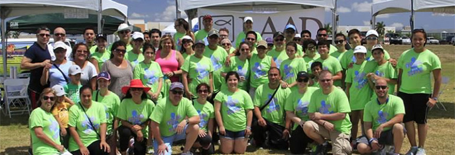

Latin American Agribusiness Development Corporation S.A.
Local Knowledge Focus Flexibility
Miami’s 15th Walk for Autism

This past month of April, LAAD participated in Miami’s 15th Walk for Autism. Practically all LAAD’s Miami Office employees participated and over US$6,800 were collected to support this noteworthy cause. LAAD employees had a chance to get some fresh air and spend time together in a non-business environment.
Thanks to all who participated!!